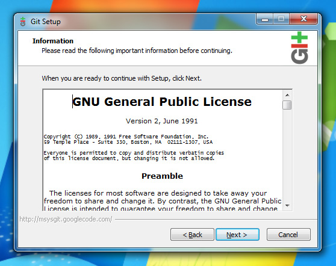
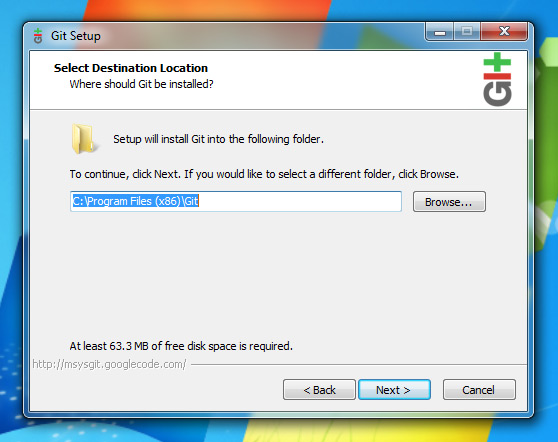
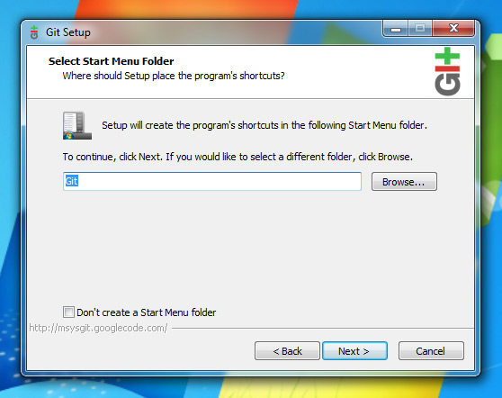
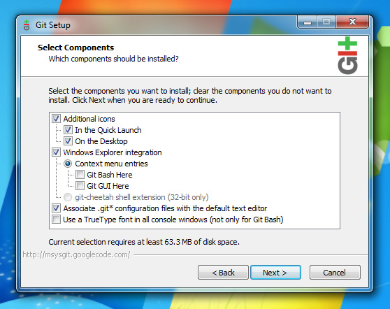
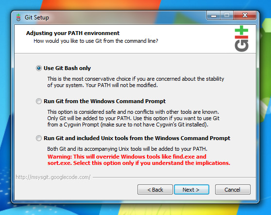
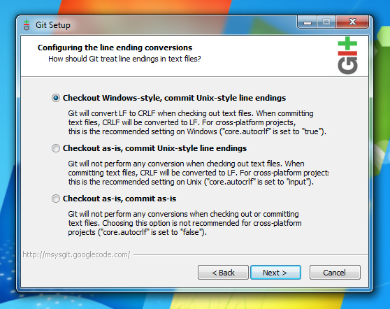
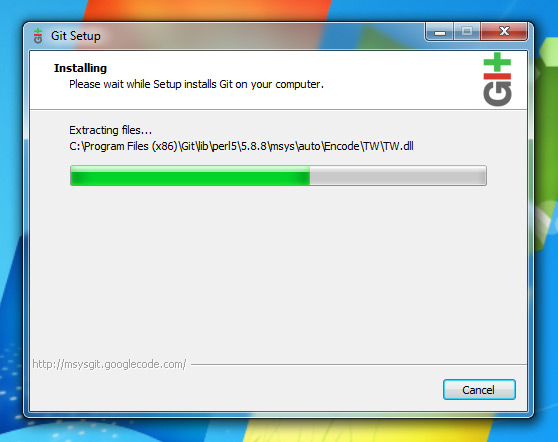
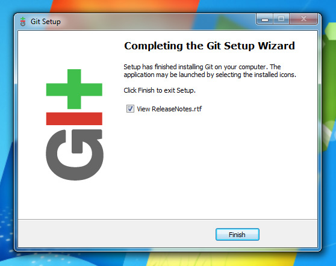

Table of Contents
Example 1. Steps
- DownLoad msysgit [1] in our public source
- Install msysgit and generate the keys pair
- Put your public key to Anjuke Git Repository [2]
- Wait for several minitus and you can clone repository from Anjuke Git Repository
- Details Install Method , You can refer github help document - http://help.github.com/win-set-up-git/








